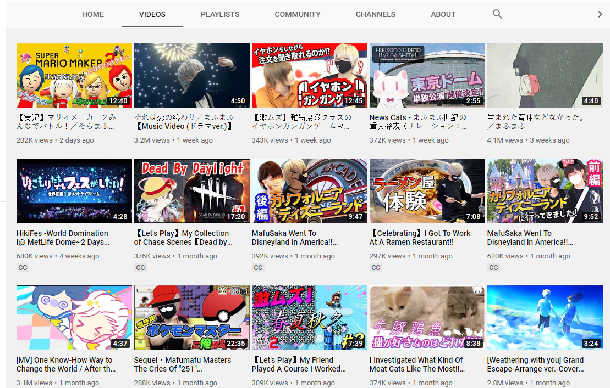

Mafumafu's channel has a wide variety of content; his channel name being まふまふちゃんねる. On Youtube, Mafu uploads covers and original songs, as well as game plays and entertaining videos with his fellow utaite friends. Almost all of Mafumafu's songs can be found on Youtube. The amount is the same for Nico Nico Douga. Mafu's international fans tend to use Youtube more than Nico Nico Douga.
